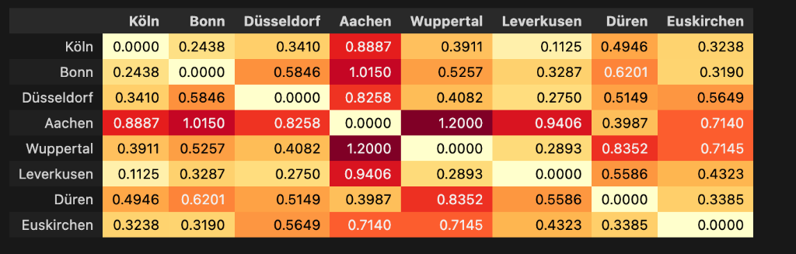
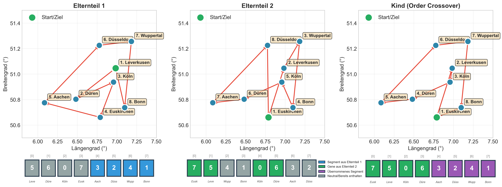
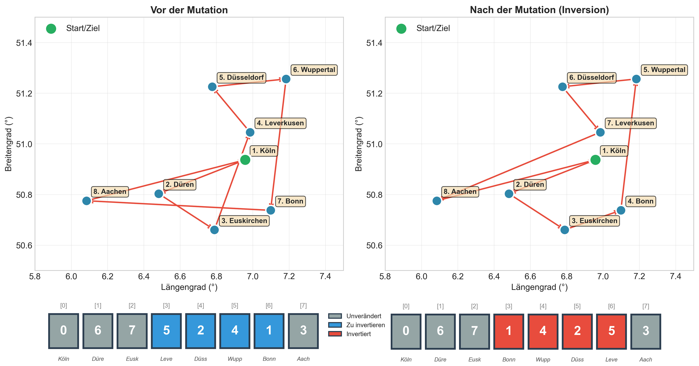
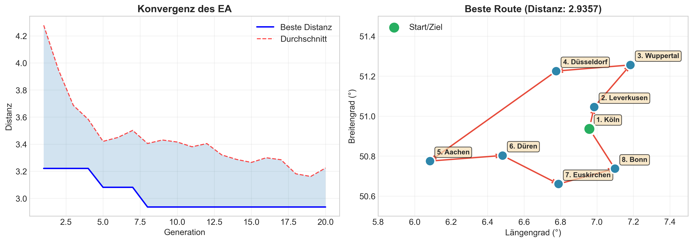

Lösung des Traveling Salesman Problems
mittels Evolutionärer Algorithmen
Benchmark-Analyse & statistische Auswertung
Agenda
- Einleitung
- Untersuchungsgegenstand (TSP)
- Problembeschreibung (Rheinland-Instanz)
- Lösungsansatz: Evolutionärer Algorithmus
- Ergebnisse & Statistische Auswertung
- Zusammenfassun
1. Einleitung
Ziel: Finden der kürzesten Rundreise durch \(n\) Städte.
Minimierung der Gesamtdistanz (Kostenfunktion).
Warum EA?
- Traveling Salesman Problem ist NP-hart
- Analytische Lösungen skalieren nicht
- Heuristiken liefern "sehr gute", nicht perfekte Lösungen in kurzer Zeit
2. Untersuchungsgegenstand
Das Traveling Salesman Problem (TSP)
- Kombinatorisches Optimierungsproblem
- Suchraum wächst faktoriell \(\frac{(n-1)!}{2}\)
| Städte (n) | Mögliche Routen | Rechenzeit (1 Mio/s) |
|---|---|---|
| 6 | 60 | < 1 ms |
| 8 | 2520 | < 1 ms |
| 10 | ~181 Tsd. | < 1 s |
| 20 | ~60 Billiarden | ~1.900 Jahre |
3. Problembeschreibung
Die Rheinland-Instanz (\(n=8\))
- Köln
- Bonn
- Düsseldorf
- Aachen
- Wuppertal
- Leverkusen
- Düren
- Euskirchen
Distanzmatrix
Symmetrische Matrix, normalisierte Distanzen (Heatmap-Visualisierung)
Distanzen in Grad (Koordinatendifferenz)
4. Lösungsansatz
Evolutionärer Algorithmus (EA)
Biologisch inspiriertes Verfahren zur globalen Optimierung.
INITIALISIERUNG (Population zufälliger Routen)
WHILE (Abbruchkriterium nicht erfüllt):
EVALUATION (Berechne Fitness / Streckenlänge)
SELEKTION (Wähle Eltern für nächste Gen.)
REKOMBINATION (Crossover)
MUTATION (Zufällige Veränderung)
ERSETZUNG (Neue Generation)
Encoding
Permutations-Kodierung
Genotyp: Liste von Stadt-Indizes | Phänotyp: Die tatsächliche Route
Komponenten & Parameter
- Selektion: Turnierauswahl (Tournament Size = 3) + Elitismus
- Crossover: Order Crossover (OX1) - Erhält relative Reihenfolge
- Mutation: Invertierende Mutation (Teilstrecke umdrehen)
Gewählte Parameter:
Populationsgröße: 50 | Generationen: 20 | Mutationsrate: 10%
Selektion: Turnierauswahl

Vergleich von Fitness (links) und Selektionshäufigkeit (rechts).
Crossover: Order Crossover
Erhält Sequenzen, valid für Permutationen.
Mutation: Inversion
Verhindert Stagnation in lokalen Optima.
5. Ergebnisse
Konvergenzverhalten
Typischer Verlauf: Schnelle Verbesserung zu Beginn, dann Sättigung.
Statistische Absicherung
Basis: 30 unabhängige Testläufe
Beobachtung: Sehr geringe Varianz bei kleiner Instanz (\(n=8\)). Algorithmus findet zuverlässig das globale Optimum.
Einfluss der Mutationsrate

Zu geringe Mutation → verfrühte Konvergenz | Zu hohe Mutation → zerstört gute Lösungen
6. Zusammenfassung
- Ziel erreicht: EA löst TSP (n=8) zuverlässig.
- Methodik: Statistische Absicherung durch 30 Runs bestätigt Robustheit.
- Kritik: Instanzgröße sehr klein → wenig Varianz.
Vielen Dank für Ihre Aufmerksamkeit!
Fragen?